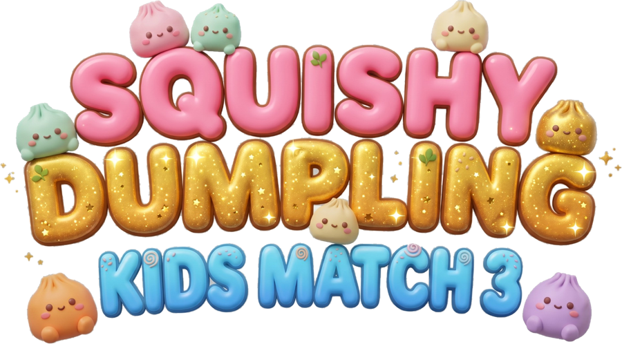

Squishy Dumpling is a calm, cozy match-3 puzzle game for little chefs. Julia and Paige make dumplings and sort them for orders from hungry animal customers. Match squishy dumplings to fill each order, roll, fill and steam your own dumpling in the kitchen, give it a name, and collect adorable dumpling cards.
Every instruction is spoken aloud, so children who can't read yet can play on their own. It works on iPhone and iPad.
Email us at squishydumplinggame@gmail.com and a real person will reply, usually within two days.
The first 18 levels are free. A grown-up can unlock every level with a one-time purchase from the Packs screen. All purchases sit behind a grown-up check, and there are no subscriptions.
Everything is a one-time purchase that's yours forever:
Prices are shown in the App Store and on the Packs screen, in your local currency.
Open Packs and tap Restore Purchases. Make sure you're signed in with the same Apple Account you bought it with.
Purchases are handled by Apple. You can request a refund at reportaproblem.apple.com.
No. There are no ads, no accounts and no tracking. See our Privacy Policy.
During a level, tap the pink Profile button at the top right. The Voice, Music and Sounds buttons switch each one on or off, and the game remembers your choice.
Turn on Reduce Motion in Settings → Accessibility → Motion. The game calms its background and character movement to match.
If the device is signed in to Game Center, the game records achievements there and offers quick-start activities in Apple's Games app. The game never asks a child to sign in. Parents can turn Game Center off in Screen Time.
Only on the device. Deleting the app removes it, and progress doesn't move between devices. Purchases do: use Restore Purchases.
Yes. On the device go to Settings → Screen Time → Content & Privacy Restrictions → iTunes & App Store Purchases → In-app Purchases → Don't Allow.